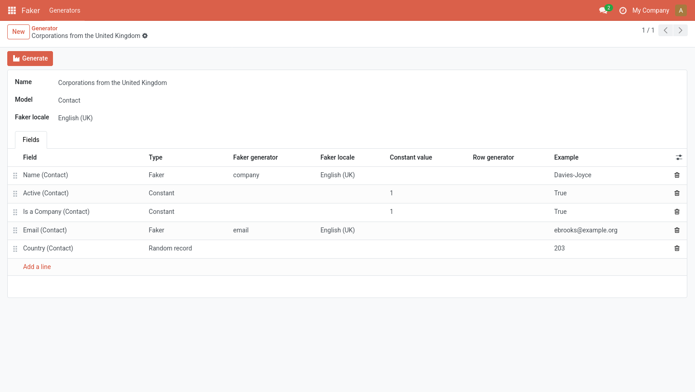
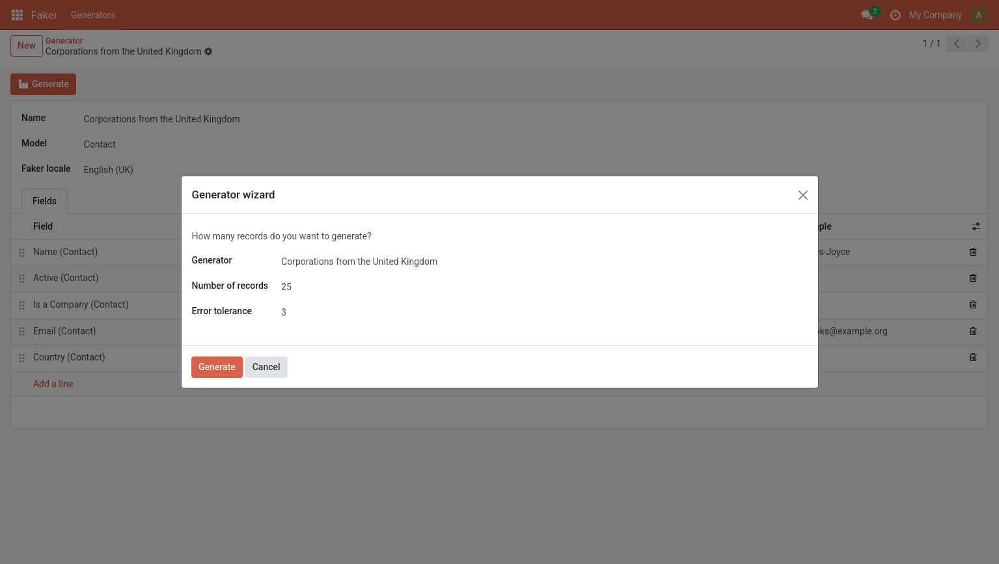

Odoo Faker is an addon for Odoo that facilitates the generation of random demo data.
First, take into account that this addon is still in development mode.
Also, remember that the addon is not intended for production sites.
Use it at your own discretion.
Once the addon is installed, you'll find a new Faker option in your menu. That option will let you define your own Generators.

Each of your generators will target a model from your Odoo database. You can create as many generators as you want. For every generator, you can define:
To make your generators useful, you have to define its fields. The fields available are literally the stored fields of the corresponding model.
The information that you can set for each field depends on the type of field, which can be one of:
When adding fields of type Constant you will only be able to set one thing: its (constant) value.
You will use constant fields when you want all the generated records to have the same value.
For instance, if you want to generate active contacts, you can set its active field to True.
The Faker type is meant to be used for fields where you want a different value to be created each time, like names, emails, phones, addresses, account numbers, etc.
The values are generated by Python's Faker, so check out their documentation. Most of its methods are available. Feel free to open an issue if you need or want one of the methods that aren't currently available.
By default, each new faker Field inherits the locale from its parent generator but you can choose a different one. Make the Faker locale column visible to be able to view and edit its value.
If your model has a many to one field (like the country of a contact) you can set its type Random record so one different record from the related table will be used each time.
If your model has a one to many relationship (like the lines of an order) you can set its type to Generated rows and use the Row generator column to select a related generator created specifically to define the child rows.
Once you have defined your generator, you can use the Generate header button to run a wizard where you can define:

This addon depends on Python's Faker package for the generation of random data. Make sure to install it before enabling the addon.
The test suite can be executed by filtering the tests with the faker tag.
odoo-bin --test-enable --test-tags faker